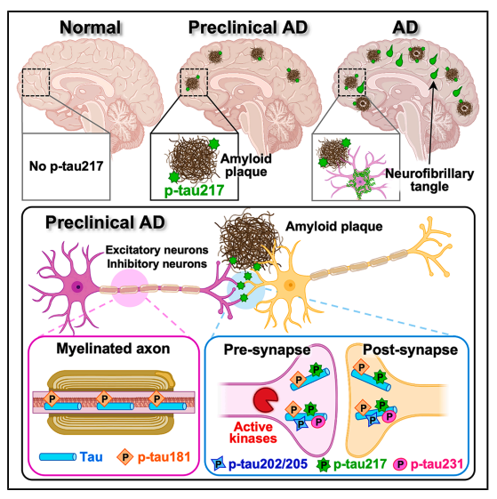
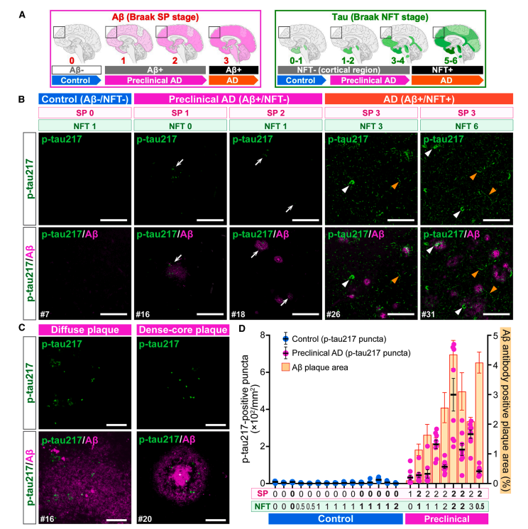
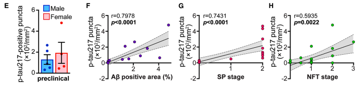
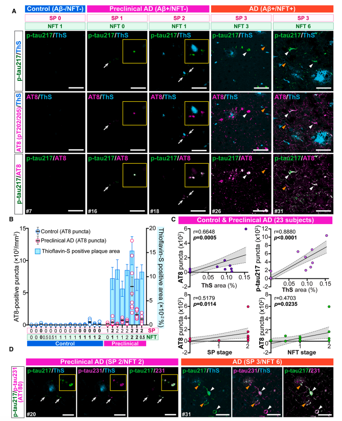
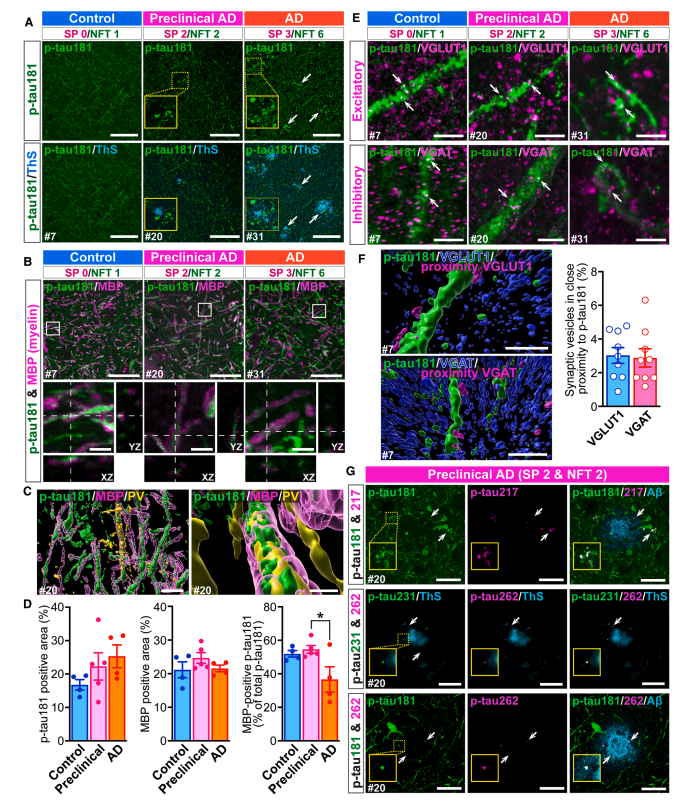
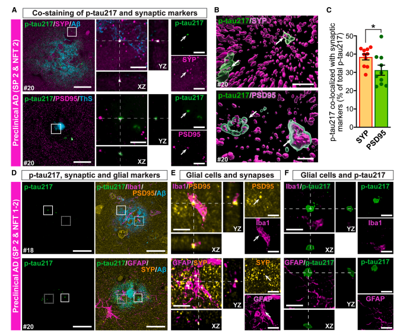
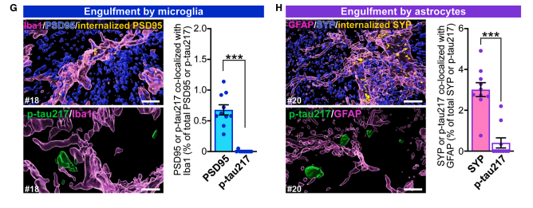
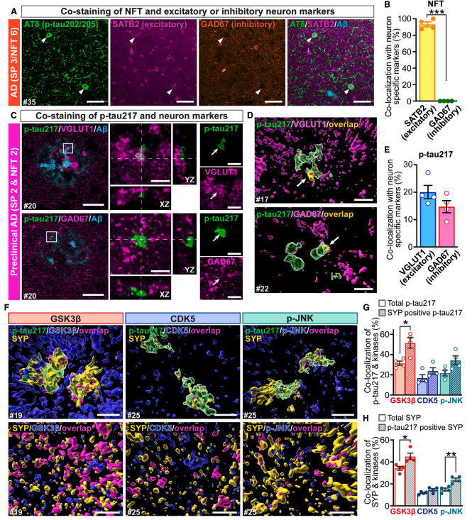

Biomarker-related phospho-tau217 appears in synapses around Aβ plaques prior to tau tangle in cerebral cortex of preclinical Alzheimer's disease
Cell Reports 44, 116203 | September 23, 2025 | DOI: 10.1016/j.celrep.2025.116203
시냅스 내 p-tau217 출현
전임상 AD 뇌의 Aβ 플라크 주변 시냅스에서 p-tau217이 NFT 형성 이전에 puncta로 나타남
능동적 인산화 반응
p-tau217 양성 시냅스에 GSK3β, Cdk5, JNK 등 활성 tau kinase가 풍부하게 공존
신경/시냅스 반응의 지표
p-tau217은 글리아 세포에 의한 탐식이 아닌, Aβ 병리에 대한 뉴런/시냅스 반응을 반영
p-tau217은 정상 뇌에는 없지만 전임상 AD에서 Aβ 플라크 주변 pre/post-시냅스에 출현하며, tau tangle(NFT) 형성보다 선행한다. 이는 혈액 바이오마커 p-tau217이 Aβ 병리에 대한 초기 시냅스 반응을 반영함을 시사한다.

Background
알츠하이머병 바이오마커와 신경병리학적 해석의 필요성
알츠하이머병(AD)의 병리학적 특징
AD는 아밀로이드 β(Aβ) 펩타이드로 구성된 노인성 플라크(senile plaques)와, 과인산화된 tau 단백질이 축적된 신경원섬유매듭(neurofibrillary tangles, NFTs), 그리고 뇌 위축을 특징으로 한다. Aβ 축적은 임상 증상 발현 20년 이상 전부터 시작되며, tau 병리는 임상적 AD 단계와 동시에 나타난다.
한계 1: 체액 바이오마커의 공간 정보 부재
혈액/CSF에서 측정되는 p-tau217은 전임상 AD에서 Aβ 축적을 민감하게 반영하는 바이오마커이다. 그러나 체액 바이오마커만으로는 뇌 조직 내에서 어디에, 어떤 세포에서 p-tau가 생성되는지 알 수 없다. 체액 수준과 신경병리학적 변화 간의 직접적 연결이 충분히 규명되지 않았다.
한계 2: p-tau217의 세포 내 위치 불명
기존 연구에서 p-tau 에피토프는 주로 NFT와 pretangle에서 검출되었으나, 최근 p-tau217이 granulovacuolar degeneration body나 multivesicular body에서도 발견되었다. 그러나 전임상 AD 단계에서 p-tau217이 어떤 세포 구획(축삭, 시냅스 등)에 출현하는지, 그 메커니즘은 무엇인지 체계적으로 연구되지 않았다.
Methods
부검 뇌 조직 기반 면역조직화학 및 초해상도 현미경 분석

Results I: p-tau217의 시공간적 출현
Aβ 플라크 주변에 p-tau217 puncta가 NFT 이전에 나타난다
정상 뇌에서는 부재
Control(Aβ-/NFT-) 뇌에서 p-tau217 신호와 Aβ 신호 모두 관찰되지 않았다.
전임상 AD에서 출현
Preclinical AD(Aβ+/NFT-) 뇌에서 Aβ 플라크 주변에 p-tau217 양성 puncta가 pretangle이나 NFT 없이도 출현. Diffuse 및 dense-core 플라크 모두에서 관찰.
- p-tau217 puncta 수는 Aβ 플라크 면적과 강한 양의 상관 (r=0.7978, p<0.0001)
- Braak SP stage와 더 강하게 상관 (r=0.7431) vs NFT stage (r=0.5935) → Aβ 병리와의 연관성이 더 높음
- 성별에 따른 p-tau217 puncta 수의 유의한 차이 없음
- AD 단계(Aβ+/NFT+)에서는 NFT와 NT 내에 p-tau217 검출, 대량의 tangle에 의해 puncta 정량이 어려움

p-tau217은 p-tau202/205, p-tau231과 공존
AT8(p-tau202/205)과의 관계
전임상 AD에서 ThS 양성 Aβ 플라크 주변에 p-tau217과 AT8 신호가 동시 출현. p-tau217 puncta의 약 70%가 AT8 양성 puncta와 중첩, AT8 puncta의 약 85%가 p-tau217과 중첩.
p-tau231과의 공존
전임상 AD에서 p-tau217과 p-tau231이 ThS 양성 Aβ 플라크 주변에서 공존 확인. 80.4%의 p-tau217이 p-tau231과, 92.1%의 p-tau231이 p-tau217과 중첩.

Results II: 세포 유형 및 시냅스 위치
p-tau181 축삭 변형, 시냅스 마커 공존, 글리아 비탐식
p-tau181: 수초화 축삭에 정상 존재, Aβ 플라크 주변에서 변형
p-tau181의 축삭 분포
p-tau181은 정상적으로 수초화된(myelinated) 글루타메이트성 흥분 뉴런과 GABAergic 억제 뉴런의 축삭에 존재한다. 그러나 Aβ 플라크 주변에서 p-tau181 양성 축삭과 수초가 뒤틀리고 변형된다. 전임상 AD에서 p-tau217 양성 puncta가 이 변형된 p-tau181 양성 축삭 주변에서 공존(82.6% 중첩)하며, p-tau262도 동일 부위에서 검출된다.

p-tau217은 Pre- 및 Post-시냅스에 위치
시냅스 마커와의 공존
STED 초해상도 현미경 분석 결과, p-tau217은 pre-시냅스 마커 SYP(synaptophysin)와 ~38%, post-시냅스 마커 PSD95와 ~31% 공존. p-tau217은 SYP보다 PSD95와 유의하게 더 높은 비율로 공존(p<0.05).
글리아에 의한 탐식 없음
미세아교세포(Iba1+)에 의한 p-tau217 puncta 탐식은 0.005%로 PSD95(0.7%)보다 현저히 낮음. 성상세포(GFAP+)에 의한 탐식도 0.4%로 SYP(3%)보다 유의하게 낮음(p<0.001). → p-tau217은 글리아 탐식 대상이 아님.


Results III: 뉴런 유형 및 Tau Kinase
흥분/억제 뉴런 모두에서 출현, 활성 kinase와 공존
흥분성 + 억제성 뉴런 시냅스 모두에서 p-tau217 출현
NFT vs p-tau217의 뉴런 유형 차이
AD 뇌에서 NFT(AT8+)는 주로 흥분성 뉴런 마커 SATB2와 공존하고 억제성 마커 GAD67과는 거의 공존하지 않음. 이는 NFT가 선택적으로 글루타메이트성 흥분 뉴런에서 형성됨을 의미.
p-tau217: 뉴런 유형 비선택적
반면, 전임상 AD에서 p-tau217은 흥분성 마커 VGLUT1과 ~20%, 억제성 마커 GAD67과 ~15% 공존. NFT와 달리 p-tau217은 두 유형 뉴런 시냅스 모두에서 나타남 → NFT 형성과 독립적인 메커니즘 시사.
p-tau217 양성 시냅스에 활성 Tau Kinase 농축
Thr217 인산화를 촉매하는 kinase
Tau의 Thr217 부위는 proline-directed kinase의 기질이다. GSK3β(glycogen synthase kinase 3β), Cdk5(cyclin-dependent kinase 5), JNK(c-Jun N-terminal kinase)이 in vitro에서 Thr217을 인산화하는 것이 알려져 있다. 본 연구에서는 이 세 kinase가 전임상 AD 뇌의 Aβ 플라크 주변 p-tau217 양성 시냅스에 공존하는지 조사하였다.
- GSK3β: p-tau217 양성 puncta의 ~30%가 활성 GSK3β와 공존. Pre-시냅스(SYP+) 내에서는 ~52%로 가장 높은 공존율
- Cdk5: p-tau217의 ~17% 공존. Pre-시냅스 내 ~27%
- JNK: p-tau217의 ~20% 공존. Pre-시냅스 내 ~36%
- p-tau217 양성 pre-시냅스는 총 SYP 대비 각 kinase와 유의하게 높은 공존율 → p-tau217 시냅스에 활성 kinase가 농축
- GSK3β가 가장 강하게 공존하며, 전임상 AD pre-시냅스에서 kinase 활성이 유의하게 상승(p<0.05, p<0.01)

Discussion
p-tau217 바이오마커의 신경병리학적 해석과 임상적 함의
바이오마커 해석: Aβ에 대한 시냅스 반응
혈장 p-tau217이 전임상 AD에서 Aβ 축적을 반영한다는 기존 관찰에 대해, 본 연구는 뇌 조직 수준에서의 해석을 제공한다. p-tau217은 Aβ 플라크 주변 시냅스에서 능동적 kinase 활성을 통해 생성되며, 글리아 탐식이 아닌 뉴런/시냅스의 직접적 반응을 반영한다.
항-Aβ 면역요법과의 연결
최근 개발된 항-Aβ 면역요법(aducanumab, lecanemab 등)에서 Aβ 플라크 제거 시 혈장 p-tau217이 감소한다. 본 연구 결과는 이 현상을 설명: Aβ 플라크가 줄면 주변 시냅스의 이상 tau 인산화 반응도 감소하기 때문이다.
p-tau217 vs p-tau181: 서로 다른 의미
p-tau217은 Aβ 플라크 주변 시냅스의 이상 반응을 반영하는 반면, p-tau181은 축삭 손상의 지표이다. p-tau181은 수초화 축삭에 정상 존재하며 Aβ 주변에서 축삭이 변형될 때 방출된다. 따라서 두 바이오마커는 서로 다른 병리생리학적 과정을 반영할 수 있다.
NFT 형성과의 독립성
NFT는 주로 흥분성 뉴런에서 선택적으로 형성되지만, p-tau217은 흥분성 및 억제성 뉴런 시냅스 모두에서 나타난다. 이는 시냅스 내 p-tau217 출현이 NFT 형성과 독립적인 과정일 수 있음을 시사하며, p-tau217이 Aβ 매개 시냅스 기능 이상의 초기 지표가 될 수 있다.
p-tau217은 전임상 AD에서 Aβ 플라크에 대한 뉴런/시냅스의 능동적 반응을 반영하는 바이오마커이다. 글리아 탐식이 아닌 시냅스 내 활성 kinase에 의한 tau 인산화가 그 기전이며, 이는 tau tangle 형성과 독립적으로 발생한다. 향후 항-Aβ 면역요법 환자의 CSF/혈장 샘플과 부검 뇌 조직을 연계한 검증 연구가 필요하다.